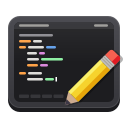

Тема для файлового менеджера far2l
GNOME Graphite
Очень тёмная графитовая тема в цветах GNOME (libadwaita dark): панели, меню, диалоги, редактор с подсветкой синтаксиса и иконки приложения. Один установщик сам определяет версию far2l и делает резервную копию настроек.
- far2l 2.6.5 и новее
- Debian 12 · Fedora 44
- Окно и терминал
- Без root
- Откат одной командой
Как выглядит
Настоящие снимки окна far2l после установки темы на чистые настройки. Нажмите на снимок, чтобы увеличить.
Палитра
Цвета взяты из палитры GNOME. Фон панелей — тот же, что у списка файлов в «Файлах» GNOME в тёмном режиме.

Иконки в том же стиле
Для far2l и редактора far2l, включая ярлыки «(Terminal)» в Debian. Ставятся только для текущего
пользователя, в ~/.local/share; системные файлы не меняются.
Установка
Нужны far2l 2.6.5 или новее и Python 3.8+. Желателен tmux: если far2l ещё ни разу не запускался, установщик сам запустит его в tmux, чтобы появились штатные настройки. Права root не нужны.
-
Скачайте тему
git clone https://github.com/vabuter/far2l-dark-theme.git
cd far2l-dark-theme
-
Закройте far2l
Нажмите F10. При сохранении настроек far2l перезаписал бы установленную тему, поэтому установщик не начнёт работу, пока far2l открыт.
-
Установите
python3 install.py
Установщик сделает резервную копию, определит версию far2l и запишет тему туда, где эта версия её читает. В конце он напечатает команду отката.
-
Проверьте
python3 install.py --verify
Последняя строка должна быть
ИТОГ: всё установлено. Запустите far2l.
Посмотреть, что найдёт установщик, ничего не меняя: python3 install.py --detect.
Он покажет путь к far2l, версию, выбранный профиль и каталог настроек.
Если far2l ещё не установлен
В основном репозитории Debian 12 far2l нет, версия 2.6.5 есть в bookworm-backports.
Графический режим — пакет far2l-wx.
echo 'deb http://deb.debian.org/debian bookworm-backports main' | sudo tee /etc/apt/sources.list.d/backports.list
sudo apt update
sudo apt install -t bookworm-backports far2l far2l-wx tmux
В репозиториях Fedora 44 far2l нет, используется COPR polter/far2l.
sudo dnf copr enable polter/far2l
sudo dnf install far2l tmux
Через ИИ-агента
В репозитории есть AGENTS.md —
пошаговая инструкция для агентов: какие проверки сделать, чего нельзя делать, как читать вывод
установщика и что сказать пользователю. Claude Code подхватывает её сам через CLAUDE.md.
Что сказать агенту
Склонируйте репозиторий, откройте агента в его каталоге и попросите:
Установи тему far2l по AGENTS.md из этого каталога
Что агент сделает
- определит версию и профиль (
--detect), не запуская far2l; - попросит закрыть far2l, если он открыт, — сам его не завершит;
- поставит тему и проверит её (
--verify), при желании — снимками экрана; - назовёт резервную копию и команду отката.
Что меняется
Всё пишется в каталог настроек far2l (обычно ~/.config/far2l)
и в ~/.local/share. Системные файлы в /usr не меняются.
| Часть | Что меняется | Файл в репозитории |
|---|---|---|
| Цвета интерфейса | панели, меню, диалоги, редактор, просмотрщик, справка | theme/farcolors.ini |
| Базовая палитра | 16 цветов: типы файлов, вывод команд во встроенном терминале | theme/palette.ini |
| Раскраска файлов | имя под курсором того же цвета, что и без курсора | — |
| Подсветка синтаксиса | схема Colorer graphite для встроенного редактора | theme/graphite.hrd |
| Иконки | far2l и редактор far2l, включая ярлыки «(Terminal)» | icons/*.svg |
far2l 2.8 и новее
Пользовательская тема settings/themes/GNOME Graphite/farcolors.ini, выбранная
в [Colors] CurrentTheme. Её видно и можно сменить в far2l: F9 → Параметры → Цвета.
far2l 2.6.5 – 2.7
Тем в far2l ещё нет, цвета пишутся в settings/farcolors.ini. Тема тоже записывается —
она подхватится сама после обновления far2l до 2.8.
Проверенные окружения
В контейнере каждого окружения тема ставится на чистый профиль, проверяется, снимается в графическом и терминальном режиме, ставится повторно и откатывается — 38 проверок. Другие дистрибутивы с far2l 2.6.5+ тоже должны работать: пути и ярлыки установщик находит сам.
Debian 12 · GNOME · X11
- far2l
- 2.6.5 из
bookworm-backports - Пакет
2.6.5~beta+ds-3~bpo12+1- Профиль
- far2l-2.6
Fedora 44 · GNOME · Wayland
- far2l
- 2.8.0 из COPR
polter/far2l - Пакет
2.8.0-4.git1b5e155.fc44- Профиль
- far2l-2.8
Откат
Перед каждой установкой делается резервная копия настроек и пользовательских иконок.
В конце установщик называет копию для отката строкой откат к виду до темы.
python3 install.py --restore ~/.config/far2l-backup-ГГГГММДД-ЧЧММСС.tar.gz
Ничего не теряется
Текущие настройки не удаляются, а откладываются в ~/.config/far2l.replaced-….
Если настройки лежат в dotfiles и подключены ссылками, откат возвращает содержимое их целей,
а ссылки остаются ссылками.
Какую копию брать
Каждый запуск установщика делает новую копию, и копии повторных запусков уже содержат тему. Для отката берите ту, что назвал установщик: это последняя копия без темы.
Свои цвета и проверка
Поменять цвета
Цвета интерфейса и палитра — константы в far2l_theme/colors.py, цвета подсветки
синтаксиса — в theme/graphite.hrd. После правки запустите python3 install.py ещё раз,
а для обновления готовых файлов в репозитории — python3 install.py --export theme.
Посмотреть без экрана
tools/snapshot.py снимает far2l на копии настроек — окно в Xvfb или терминал в tmux,
tools/shotcheck.py проверяет цвета на снимках.
python3 tools/snapshot.py --out /tmp/far2l-shots
Проверить всё целиком
Модульные тесты и сквозная проверка во всех окружениях в контейнерах (нужен podman или docker).
python3 -m unittest discover -s tests
python3 tools/e2e.py
Вопросы и проблемы
Полная таблица — в разделе «Решение проблем» файла AGENTS.md.
Установщик пишет «far2l запущен», а окна нет
far2l мог остаться в фоне после закрытия терминала. Запустите far2l в терминале — он предложит вернуть фоновый сеанс, — и выйдите по F10. Установщик никогда не завершает far2l сам: в редакторе могут быть несохранённые файлы.
Как узнать версию far2l? far2l --version открыл окно
В far2l 2.6 ключа --version нет — команда запускает сам far2l. Версию показывает
первая строка far2l -h или python3 install.py --detect.
far2l остался синим
Скорее всего, far2l был открыт во время установки или настройки сохранили по
Shift+F9 после неё. Закройте far2l и запустите python3 install.py ещё раз.
Внизу панели красная строка (far2l 2.6)
В far2l 2.6 цвет этой строки называется Panel.Info.Tota (опечатка в самом far2l),
а отсутствующий цвет он рисует красным. Установщик всегда записывает это имя; красная строка значит,
что far2l сохранил настройки после загрузки файла без него, например от старой версии темы.
Закройте far2l и установите заново.
Редактор синий, а всё остальное тёмное
Подсветка синтаксиса (Colorer) не нашла схему graphite и взяла стандартную.
Запустите python3 install.py --verify и посмотрите строки Colorer. Если установщик пишет
«Colorer выключен (Enabled=0)», включите его: python3 install.py --enable-colorer.
Иконка в доке не сменилась
GNOME может держать старую иконку до повторного входа в сеанс. В X11 достаточно
Alt+F2, ввести r и нажать Enter. На macOS иконки не ставятся.
Установщик остановился с кодом 3
Сборка far2l старше 2.6.5 (или снимок 2.6.4 до декабря 2024) хранит цвета иначе, и тема на неё не встанет. Обновите far2l.
far2l ещё ни разу не запускался, а tmux нет
Запустите far2l один раз и выйдите по F10 — он создаст штатные настройки, —
затем снова python3 install.py. С tmux установщик делает это сам.